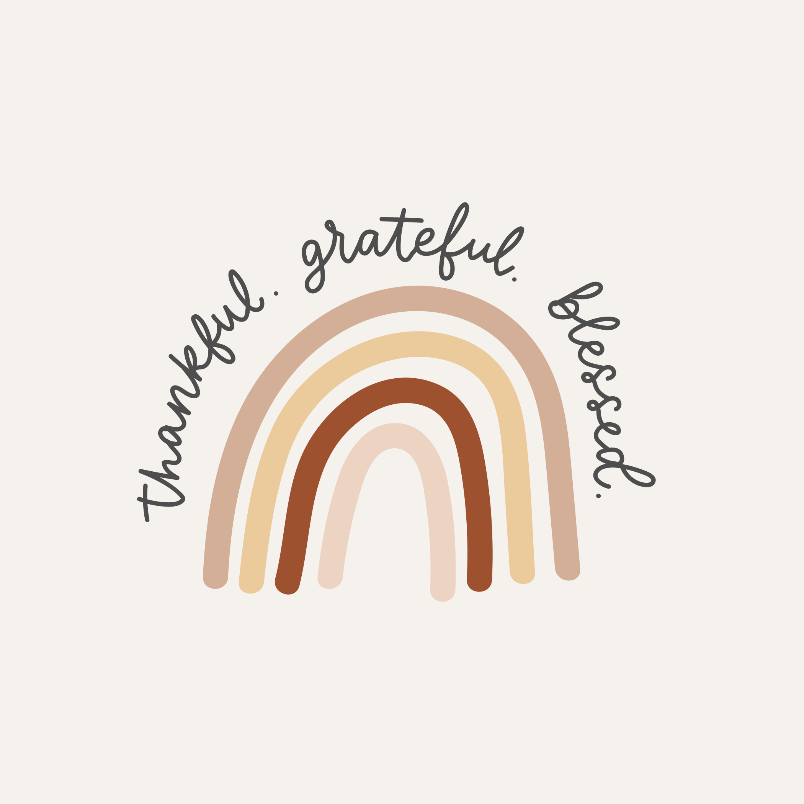

Online gratitude network
My capstone project for CS50 web. This is an online gratitude journal network application. It uses Django for the backend and HTML, JavaScript, and bootstrap for the front end. Users can post daily private and public entries with the goal of posting three gratitude entries per day. Site is hosted on Heroku with a PostgreSQL database, profile pictures are stored on an Amazon S3 bucket.
Features
Gratitude Post: Users who are signed in are able to write a new text-based post by filling in text into a text area and then clicking a button to submit the post.
Private Posts: Users are able to classify posts as private which will only be seen by them.
All Posts: The “All Posts” link in the navigation bar takes the user to a page where they can see all public posts consolidated by day from all users, with the most recent posts first.
Profile Page: Displays user's profile picture, location, and bio information. Also displays the number of followers, number of posts, and number of people the user is following. Users can edit their profile or change their photo at any time.
Following Page: The “Following” link in the navigation bar takes the user to a page where they see all posts made by users that the current user follows. Page is only available to users who are signed in.
Pagination: Only 10 posts are shown per page. If there are more than 10 posts a next and previous button appear.
Edit Posts: Users are able to click an “Edit” button on any of their own posts to edit that post.
Like and Unlike: Users are able to click a button on any post to toggle whether or not they “like” that post.
Password Recovery: Users are able to change their password or create a new password with a link sent to their email
User Map: Mapbox API is used to create a map of all users. Username is displayed when map pin is clicked